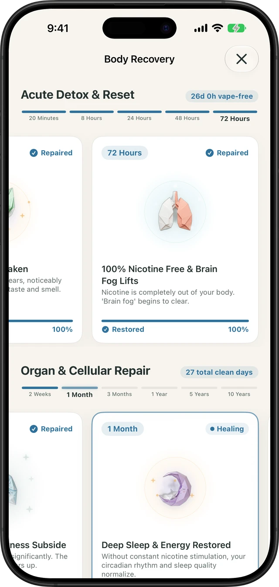

When you decide to put down your vape, whether it is an Elf Bar, Geek Bar, JUUL pod, or refillable device, your body starts adjusting to life without nicotine. Most vapes contain nicotine, which is highly addictive (CDC) and acts on nicotinic receptors in the brain (Benowitz, 2009).
Everyone's pace is different, and formal timelines specifically measuring recovery from e-cigarettes are still more limited than research on combustible cigarettes. Still, tobacco abstinence research (Hughes, 2007) and public health guidance (Smokefree.gov) give a reliable picture of what many people notice over the first days, weeks, and month off vaping.
| Timeframe | What Typically Shifts | What Many People Experience |
|---|---|---|
| First Hours | Nicotine intake stops while daily habit cues remain | Early urges to reach for a vape during normal breaks or routines |
| Days 1 to 3 | Early nicotine withdrawal begins as your body adjusts | Restlessness, irritability, cravings, dry mouth, or changes in taste |
| Week 1 | Most withdrawal symptoms peak within the first week (Hughes, 2007) | Peak irritability, anxiety, low mood, trouble concentrating, or insomnia |
| Weeks 2 to 4 | Most withdrawal symptoms last 2 to 4 weeks (Hughes, 2007) | Gradual easing of brain fog, mood swings, and sleep disruption |
| Month 1 & Beyond | Cravings come and go and get weaker over time (Smokefree.gov) | Fewer daily urges, steadier focus, and easier breathing comfort for many people |
First Hours to Day 1: Stepping Away From Constant Nicotine
Nicotine is a stimulant that can temporarily raise heart rate and blood pressure. When you stop puffing, you immediately stop taking in fresh nicotine and heated e-liquid aerosol.
For many people, the biggest surprise in the first hours is behavioral rather than purely physical. You may catch yourself tapping your pocket, glancing at your desk, or reaching for your nightstand before you even realize you are doing it.
Days 1 to 7: Navigating the Withdrawal Peak
During the first week without nicotine, withdrawal symptoms can feel uncomfortable, though they are temporary. According to a review of tobacco abstinence studies (Hughes, 2007), common withdrawal symptoms such as irritability, anxiety, low mood, trouble concentrating, restlessness, and insomnia typically peak within the first week.
- Mood shifts and cravings: Sudden frustration, restlessness, or strong urges are common as your daily routine changes. Smokefree.gov notes that cravings come and go and get weaker over time.
- Dry mouth and taste changes: Some people notice dry mouth or muted flavor perception early on (see our vaper's tongue guide). Drinking plenty of water, cleaning your tongue gently, and chewing sugar-free gum often help your mouth feel fresher.
- Practical first-week support: Keep cold water nearby, remove leftover pods or disposables from reach, and take short walks when restlessness spikes.
Built into Quit Vaping
Follow general recovery milestones on your iPhone
Track your vape-free days, money saved, and general recovery milestones based on your quit date, 100% private with zero cloud tracking.
Track My Recovery Free on iOS →
Weeks 2 to 4: Withdrawal Symptoms Ease for Most People
Once you get past the first week, the sharpest discomfort usually starts to soften. A review of tobacco abstinence studies found that most nicotine withdrawal symptoms last 2 to 4 weeks (Hughes, 2007), though each person's experience depends on their habits, stress levels, and support.
During this window, many people notice that trouble concentrating, commonly called brain fog (read our brain fog guide), gradually lifts alongside better sleep and steadier daytime energy. If mood symptoms or insomnia feel severe or continue well beyond a month, check in with a doctor or healthcare provider.
Day 30 and Beyond: Breathing Comfort and Daily Routines
Staying vape-free removes ongoing exposure to heated aerosols, sweeteners, and airway irritants. Over the first month and beyond, many former vapers report less throat dryness, fewer morning coughs, and greater breathing comfort during everyday activity, though individual recovery varies with overall health and how long you vaped.
Some people notice temporary coughing or throat clearing in the weeks after stopping. Staying hydrated and avoiding secondhand smoke can help, and if you ever experience persistent shortness of breath, wheezing, chest pain, or a cough that worsens, talk to a doctor for a medical evaluation.
A Week-by-Week Plan for Your First 30 Days
The timeline above tells you what to expect. This table turns it into one concrete task per stage, so each week has a single job.
| Stage | Main Job | One Concrete Step |
|---|---|---|
| Day 0 | Remove easy access | Throw out spare disposables and pods, and pick a quit date you log in a tracker |
| Days 1 to 7 | Get through the peak | Write down your 3 most common vape moments (car, breaks, after meals) and plan a swap for each |
| Days 8 to 14 | Handle leftover cravings | When an urge hits, wait it out before deciding anything, using slow breathing or a short walk |
| Days 15 to 30 | Guard against slips | Plan ahead for parties, stress, and drinking, where many people are most tempted |
How to Ride Out Cravings When They Strike
Even after early withdrawal eases, everyday triggers like stress, social outings, or driving can spark a sudden urge. Cravings usually rise and pass, and many people find they ease within minutes if they do not act on them (Smokefree.gov).
Mindfulness strategies such as urge surfing can help you get through those moments without reaching for a device. In one randomized trial (Bowen & Marlatt, 2009), college smokers taught urge surfing smoked fewer cigarettes over the next 7 days than controls, even though the technique did not necessarily reduce the urges themselves right away. Pairing slow breathing (such as inhaling for 4 seconds and exhaling for 6 seconds) with a glass of cold water or a brief walk gives you a steady way to wait out each wave.
Sources
- Benowitz NL. Pharmacology of nicotine: addiction, smoking-induced disease, and therapeutics. Annu Rev Pharmacol Toxicol, 2009.
- Bowen S, Marlatt A. Surfing the urge: brief mindfulness-based intervention for college student smokers. Psychol Addict Behav, 2009.
- Centers for Disease Control and Prevention (CDC). E-Cigarettes (Vapes).
- Hughes JR. Effects of abstinence from tobacco: valid symptoms and time course. Nicotine Tob Res, 2007.
- Smokefree.gov. Understanding Withdrawal.